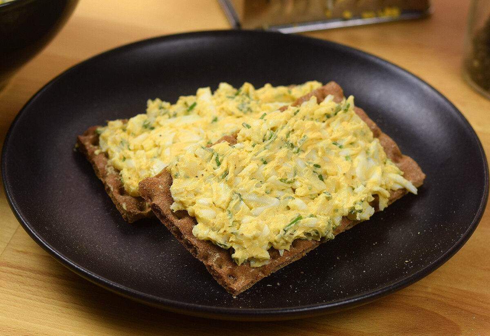

Tojáskrém

Home
Leírás
Ez a hihetetlenül gyorsan elkészíthető és rendkívül finom krém tökéletes megoldás,ha változatossá szeretnénk tenni a szendvicsünket néha napján!
Hozzávalók
- 3 db főtt tojás
- 2 ek vaj (szobahőmérsékletű)
- 2 ek snidling
- 1 teáskanál mustár
- bors ízlés szerint
- só ízlés szerint
Elkészítés
- A tojásokat forrástól számítva 10 percig főzzük.
- Megtisztítjuk őket, és nagy lyukú reszelőn, lereszeljük.
- Hozzáadjuk a vágott snidlinget, a mustárt, vajat, só, borsot, és jól elkeverjük, hogy krémes állagot kapjunk.
- Kenhetjük aztán pirítósra, kétszersültre vagy csak egy jó szelet kenyérre.